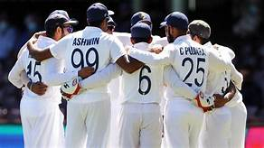

India pulled off a record run-chase in a thrilling final session to hand Australia their first defeat at Brisbane's Gabba ground since 1988 and clinch the four-Test series 2-1 on Tuesday. Wicketkeeper Rishabh Pant starred with a swashbuckling 89 not out as the injury-depleted visitors overhauled the 328-run target with three overs to go, winning by three wickets. Australia had not been beaten at the Gabba since falling to Viv Richards' all-conquering West Indies side by nine wickets in November 1988.
 CLICK THE LINK TO READ MORE.....